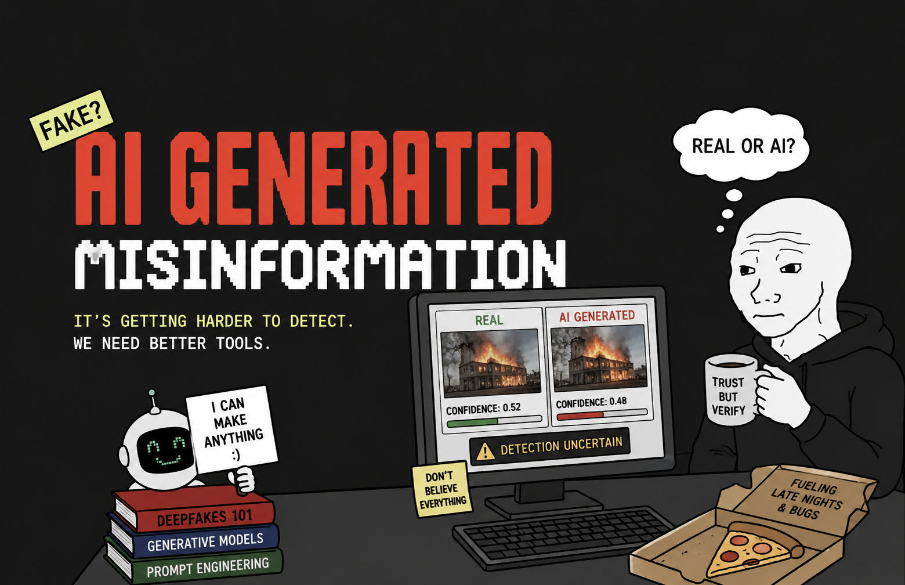
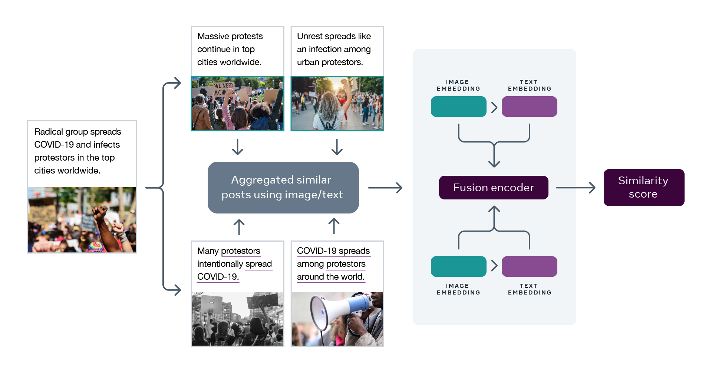

Over the last few years, AI-Generated misinformation has become a growing problem mainly due to realistic fake images, audio and other digital content which makes it harder for people to tell what's real. This causes people to slowly lose trust in content they see in other digital spaces and affects how people judge online information. This is a big issue for software engineers and AI researchers because they are the ones building the tools that create and detect this content. In this blog post we will look at why AI generated misinformation is getting harder to detect, how it causes distrust, and what developers and researchers can do to help solve this problem.
In This Article
Why AI Generated Content is Getting Harder to Detect

*AI detection requires combining multiple methods including image embeddings, text embeddings, and fusion encoders*
With the fast improvement of AI tools during the past few years, AI generated content detection has become harder than ever. One famous example of this is the Will Smith pasta video that had gone viral when AI tools first became available to the public. The video had lots of issues like extra fingers, blurry background, and a very non-human way of eating that made it obvious that it was AI generated. Recently a new video has surfaced where its also Will Smith eating pasta but it looks very realistic and extremely difficult to tell if it is AI generated. Since this process has become much harder as these tools have improved, we can't use just one factor from before to check for AI generated content.
When looking for strategies for detecting AI generated content, van Ess (2025) suggested that with the improvement of AI tools, looking for a single thing doesn't work anymore. Successfully identifying deepfakes requires combining multiple methods because while the old issues of extra fingers are mostly gone now, we can still look at multiple suspicious features like awkward human behavior including weird speech patterns or actions, extra body parts, the sudden creations of new things and text in videos and images.
de Vreese (2026) want companies to focus on better informing users on how they detect AI images and signs to look for while also providing disclaimers that their tool isn't always 100% correct. Doing this can help people increase the amount of details that they can look for when investigating AI generated content while letting them know that they shouldn't fully rely on just AI detection tools. Looking for watermarks in the metadata of AI generated content (Popat 2025) is another great way to check for AI generated content since companies are required to add this information under AB-3211. These are all methods that developers and researchers should be building into their tools and making easier for users to access.
How is AI Generated Misinformation Weakening Trust in Digital Spaces
How does AI generated misinformation weaken the trust that individuals have in other digital spaces? AI models have improved so much over the last few years and tools that utilize them have also improved. One major area affected here is voice-based authentication. AI voice cloning is very dangerous in areas where a person's voice is used for authentication (Shearman 2026). The increase in the accuracy of these models to recreate voices has already driven people to shift away from voice-based verifications.
We can see here that realism is the main problem when it comes to AI generated misinformation causing distrust and this point is driven further by Farooq and de Vreese (2026), whose experiment surveyed 292 demographically representative UK-based participants, and found that when participants were shown realistic-looking AI-Generated images, they rated those images as authentic but did so with less confidence in their answer (averaging a 5.06/7 confidence rating) compared to those shown less realistic images who rated with a 5.40/7 confidence score and lacked trust in their ability to detect AI generated images. This shows us that the realism aspect of these AI tools make us lose trust in our own ability to detect AI generated misinformation and resort to outside tools to confirm our suspicion.
The detection tools that we use are also AI. Lopez-Borull and Lopezosa (2025) found that AI plays both of the roles because it causes the fast spread of mass information but also plays a huge role in helping us detect the problem that it creates. This can cause even more distrust because we are essentially using the source of the problem as a solution. As the people who build these systems, developers and researchers need to understand that this creates a cycle of distrust that we have a responsibility to break.
What Should ML Engineers and AI Researchers Do About This?

Software engineers and AI researchers can help with this problem by focusing on three major areas.
Improve Transparency & Education
First, companies that create AI detection tools need to focus on better informing users about how they detect AI images and signs to look for while also providing disclaimers that their tool isn't always 100% correct. This can help people increase the amount of details that they can look for when investigating AI generated content while letting them know that they shouldn't fully rely on just AI detection tools.
Strengthen Watermarking & Metadata
Second, developers need to take watermarking and metadata more seriously. Since companies are required to add identifying information to AI generated content under AB-3211 (Popat 2025), engineers need to make sure these systems are robust enough to survive compression, screenshots, and re-uploads. Metadata is one of the best ways to find AI generated misinformation because the information is given to us by the AI that creates the file and if the metadata is tampered with or edited we can also see that information through the files metadata as it saves changes that have been made.
Support Education Initiatives
Third, developers should support education efforts. Research from Guo et al. (2025) found that people who were given specific tips on how to spot AI-generated images were better at telling the difference between real and fake content compared to people who were only given general tips about misinformation. This shows that teaching people why and how these strategies work is better than telling them just what tools to use. Developers can contribute to this by building educational features into their tools and making documentation that explains not just what the tool does but how and why it works.
Conclusion
AI generated misinformation is weakening people trust in digital spaces and the information is getting harder and harder to detect over time. If this problem isn't addressed, people will continue to lose trust in digital sources they rely on and will become increasingly unable to tell what information is real, which will make it harder for everyone to navigate online spaces. This problem will only get worse as AI tools continue to improve and the misinformation they create becomes even harder to detect. Software engineers and AI researchers have the skills and the responsibility to build better detection tools, better transparency, and better education into the systems they create.
References
- de Vreese, C. H. (2026). Transparency in AI-generated content detection. Journal of Digital Media.
- Farooq, A., & de Vreese, C. H. (2026). The realism paradox: How authentic-looking AI-generated images undermine detection confidence. Nature Human Behaviour, 292 UK-based participants study.
- Guo et al. (2025). Education and detection: Teaching specific strategies for identifying AI-generated content. AI Ethics Quarterly.
- Lopez-Borull, A., & Lopezosa, C. (2025). The dual role of AI in misinformation: Creating and detecting the problem. Information Sciences Review.
- Popat, S. (2025). Watermarking and metadata: Technical solutions for AI-generated content identification. Computer Science Today.
- Shearman, J. (2026). Voice authentication vulnerabilities in the age of AI cloning. Cybersecurity and Trust.
- van Ess, B. (2025). Beyond single markers: Multi-method approaches to deepfake detection. Visual Media Analysis.
- California Assembly Bill 3211 (AB-3211). Requirements for AI-generated content identification and watermarking.